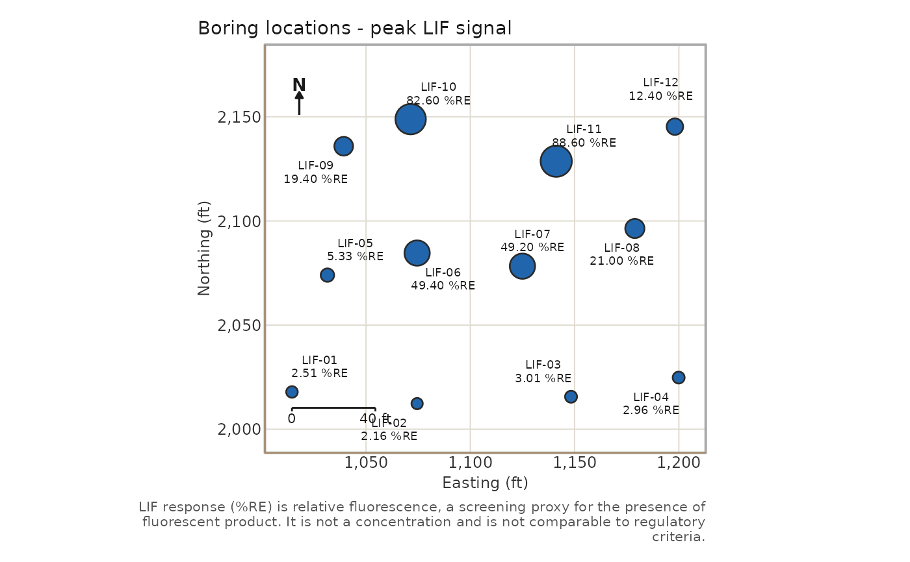
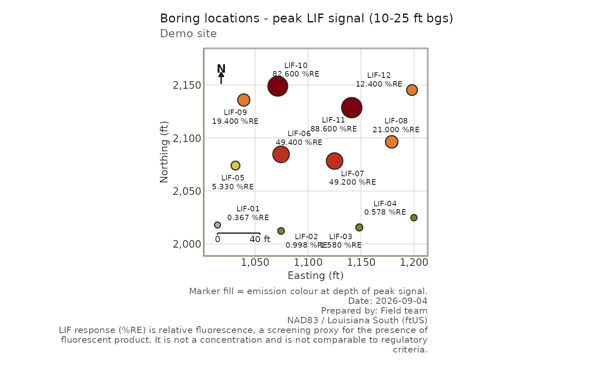
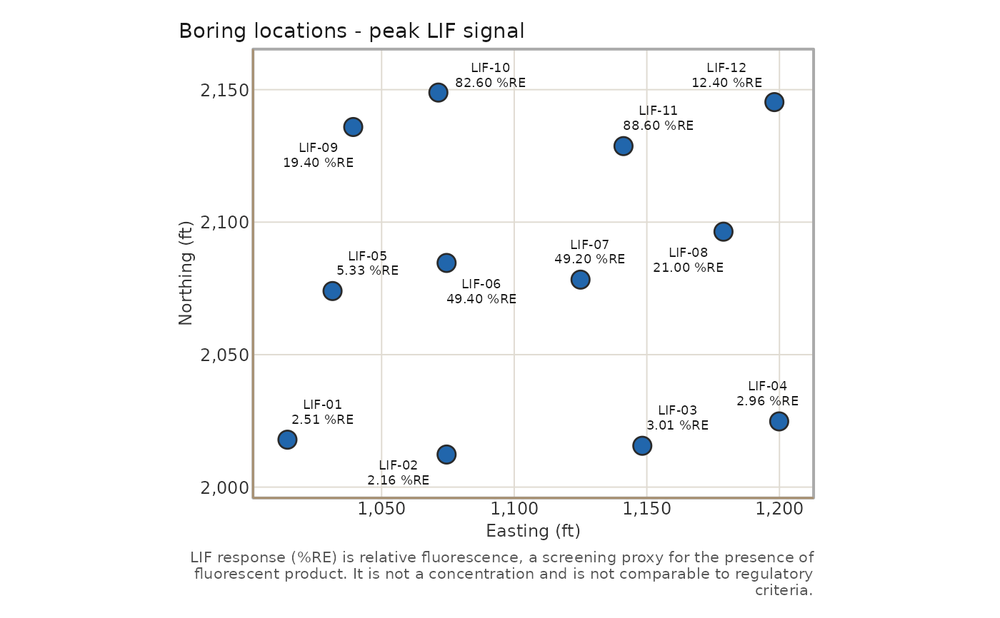

Each boring is a marker at its easting/northing, labelled with its name
and peak %RE. Marker area scales with the square root of peak signal so
the site's response pattern reads even in greyscale; non-detects are
hollow circles. Marker fill is a neutral blue unless
use_instrument_color = TRUE, which fills each marker with the
emission colour recorded at the depth of peak signal.
Usage
boring_map(
data,
depth_min = NULL,
depth_max = NULL,
nd_threshold = 0,
size_by_signal = TRUE,
point_size = 4,
use_instrument_color = FALSE,
label_size = 2.4,
repel = TRUE,
seed = 42,
signal_digits = 3,
coord_units = "ft",
title = NULL,
site_name = NULL,
figure_date = NULL,
preparer = NULL,
crs_label = NULL,
north_arrow = TRUE,
scale_bar = TRUE,
basemap = NULL,
output_file = NULL,
width = 8,
height = 7,
dpi = 200
)Arguments
- data
A lif_data frame with
eastingandnorthing.- depth_min, depth_max
Optional depth window (ft); only readings inside it contribute to each boring's peak.
- nd_threshold
Peak signal at or below this value is a non-detect. Default 0.
- size_by_signal
Logical. Scale marker area by peak signal. Default
TRUE.- point_size
Marker diameter at maximum signal. Default 4.
- use_instrument_color
Fill markers with the emission colour at peak depth. Default
FALSE.- label_size
Label font size. Default 2.4.
- repel
Use
ggrepelfor non-overlapping labels when installed.- seed
Seed for reproducible label placement.
- signal_digits
Significant digits in the peak label.
- coord_units
Unit string for the axis titles and scale bar.
- title, site_name, figure_date, preparer, crs_label
Text for the title, subtitle, and caption lines.
NULLomits each.- north_arrow, scale_bar
Logical. Draw the north arrow (upper corner) and scale bar (lower corner); each is placed in the corner that overlaps the fewest borings.
- basemap
A
lifr_basemapfromfetch_basemap()drawn under the markers; labels switch to white with a dark halo.- output_file
Optional PNG path.
- width, height, dpi
Passed to
ggplot2::ggsave().
Reading the map
Marker area is proportional to peak signal (square-root scaling), so the response pattern reads in greyscale.
A hollow circle is a non-detect: no reading above
nd_thresholdin the depth window.Marker fill is a neutral blue unless
use_instrument_color = TRUE, which uses the emission colour recorded at the depth of peak signal. That colour is the product signature analysts read in the field; the caption says so whenever it is in use.The label under each marker is the boring name and its peak %RE.
Examples
demo <- system.file("extdata", "demo", package = "lifr")
lif <- lif_import(demo, verbose = FALSE)
boring_map(lif)

# Product-signature colours, a depth window, and figure metadata
boring_map(lif, depth_min = 10, depth_max = 25, use_instrument_color = TRUE,
site_name = "Demo site", figure_date = "2026-09-04",
preparer = "Field team", crs_label = "NAD83 / Louisiana South (ftUS)")

# Uniform markers, no cartographic furniture
boring_map(lif, size_by_signal = FALSE, north_arrow = FALSE, scale_bar = FALSE)

if (FALSE) { # \dontrun{
# Over aerial imagery (needs sf, png, and network access)
bm <- fetch_basemap(lif, crs = 3452)
boring_map(lif, basemap = bm, output_file = "boring_map.png")
} # }